12 original structures; coherent palettes; verified geometry and assembly orders.
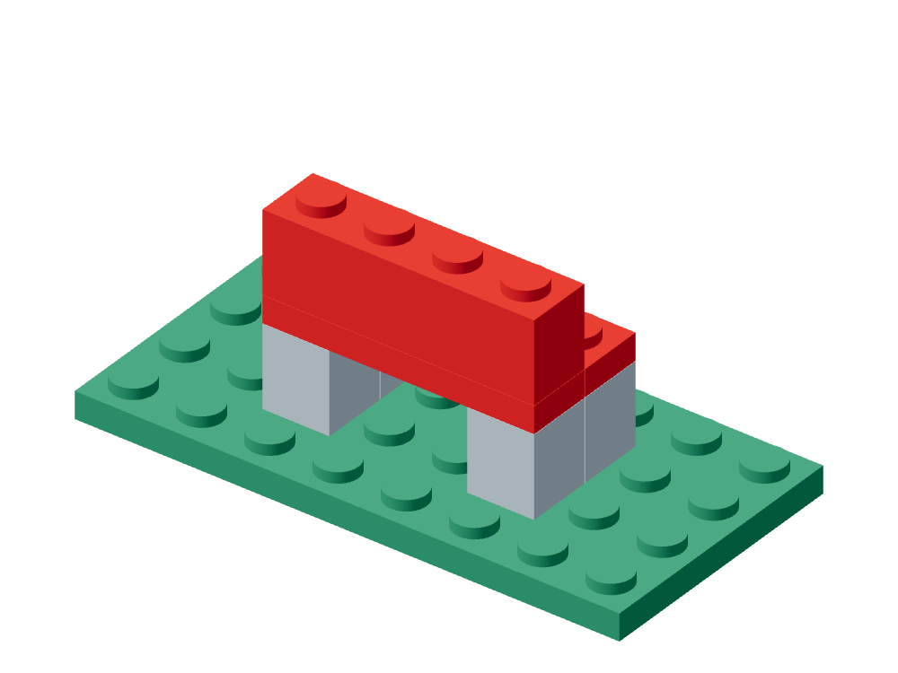
Garden Benchfurniture · 8 parts · 3 colors
A symmetric park bench with four legs, a thin seat and a raised backrest.
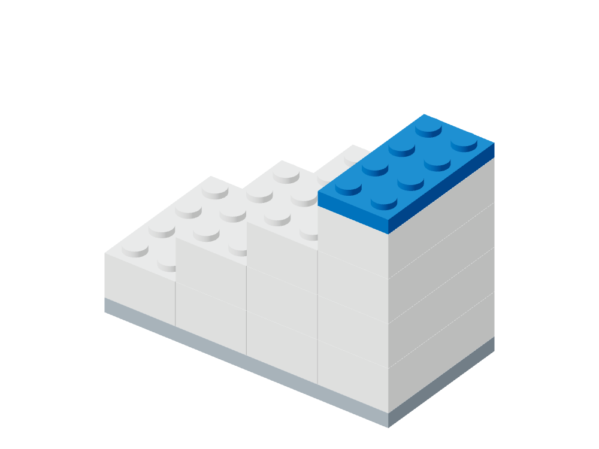
Four-Step Staircasearchitecture · 12 parts · 3 colors
A monotonic four-step staircase terminating in a blue landing.
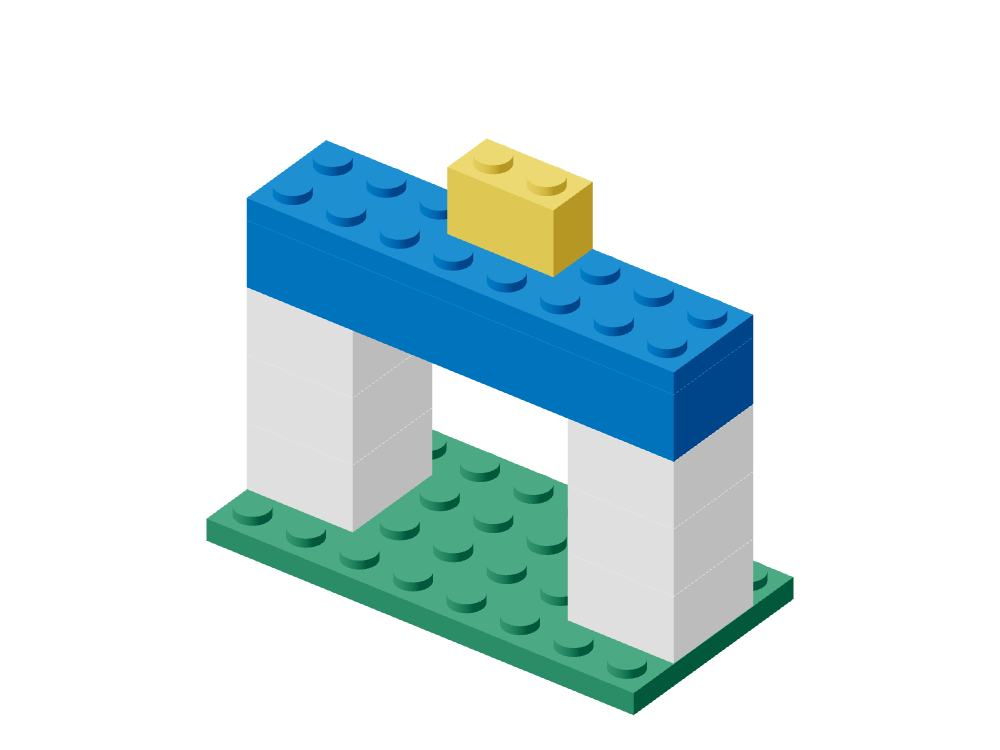
Garden Gatearchitecture · 10 parts · 4 colors
A balanced gateway with two white pillars, a blue lintel and a centered sign.
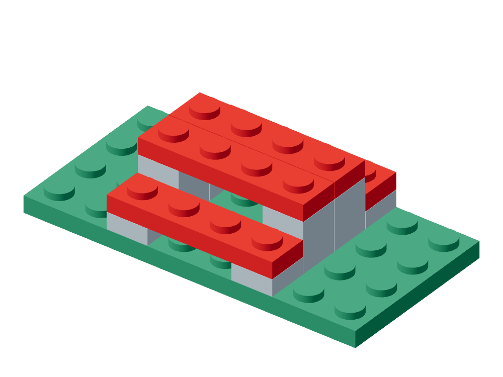
Picnic Tablefurniture · 13 parts · 3 colors
A red tabletop flanked by two lower benches on a green ground plate.
Canal Bridgeinfrastructure · 16 parts · 4 colors
A white bridge deck spanning two gray piers over blue water, with red guard rails.
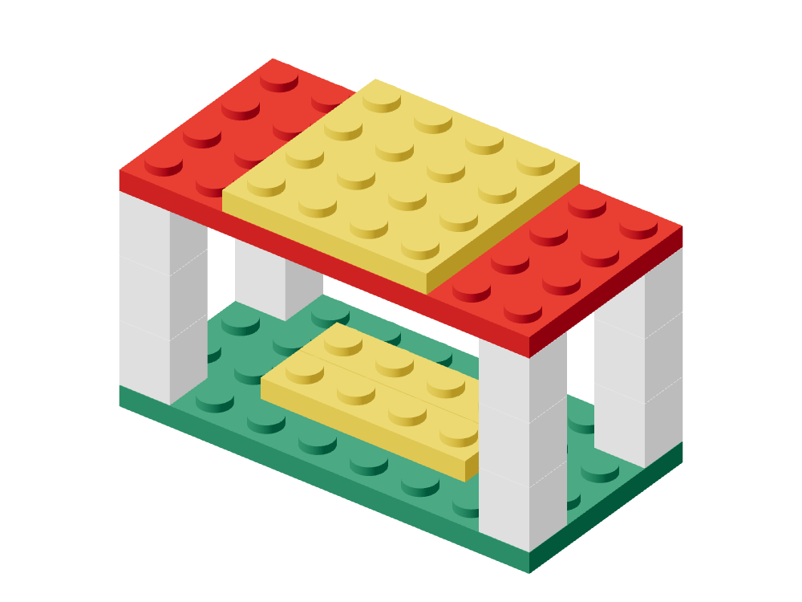
Park Pavilionarchitecture · 17 parts · 4 colors
An open four-column pavilion with a red roof, yellow cap and yellow interior benches.
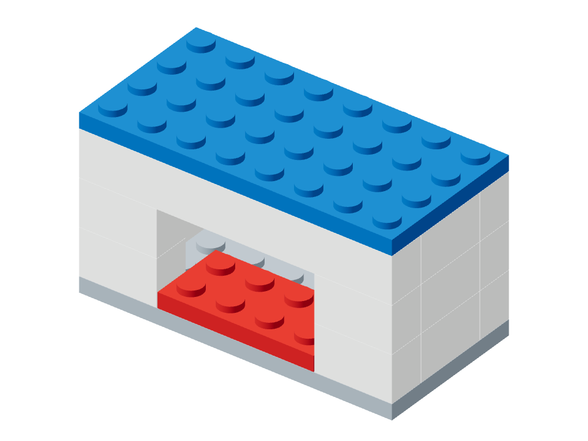
Townhousearchitecture · 17 parts · 4 colors
A white enclosed house with a centered front doorway, blue roof and red doorstep.
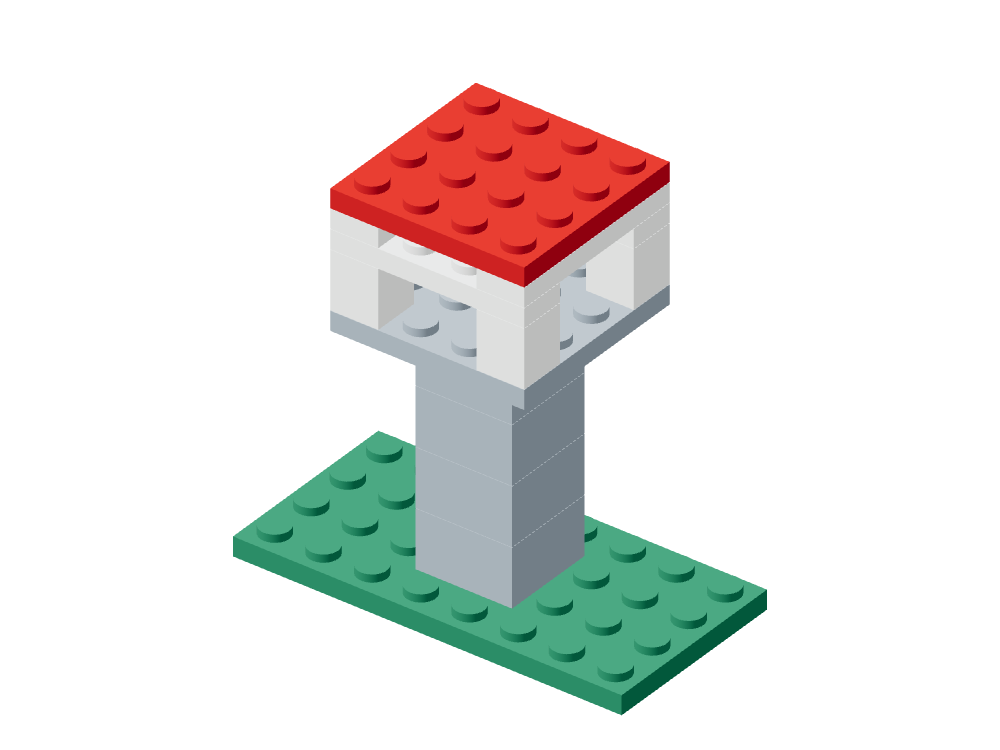
Watchtowerlandmark · 15 parts · 4 colors
A tall gray shaft carrying a lookout platform, white rails and red roof.
 Double-Span Bridge
Double-Span Bridgeinfrastructure · 28 parts · 4 colors
A two-segment white deck carried by four gray piers over a continuous blue channel.
Lighthouselandmark · 15 parts · 4 colors
A striped red-and-white lighthouse on a white rock base, surrounded by blue water.
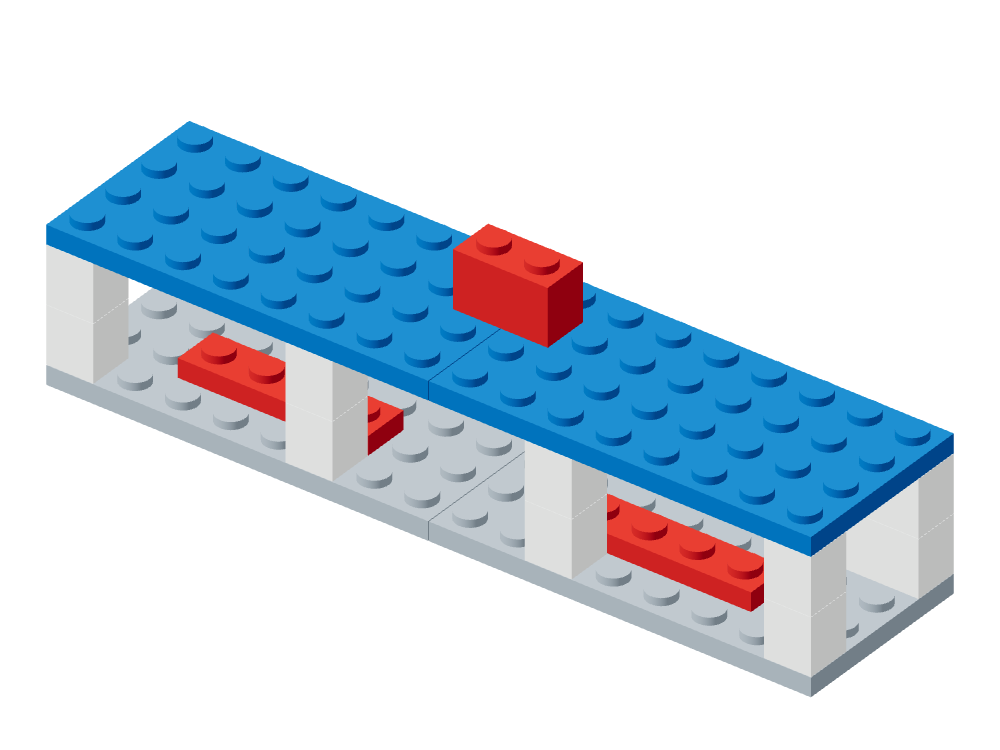
Railway Stationarchitecture · 19 parts · 4 colors
A long white station canopy with two blue roof modules, red benches and a centered sign.
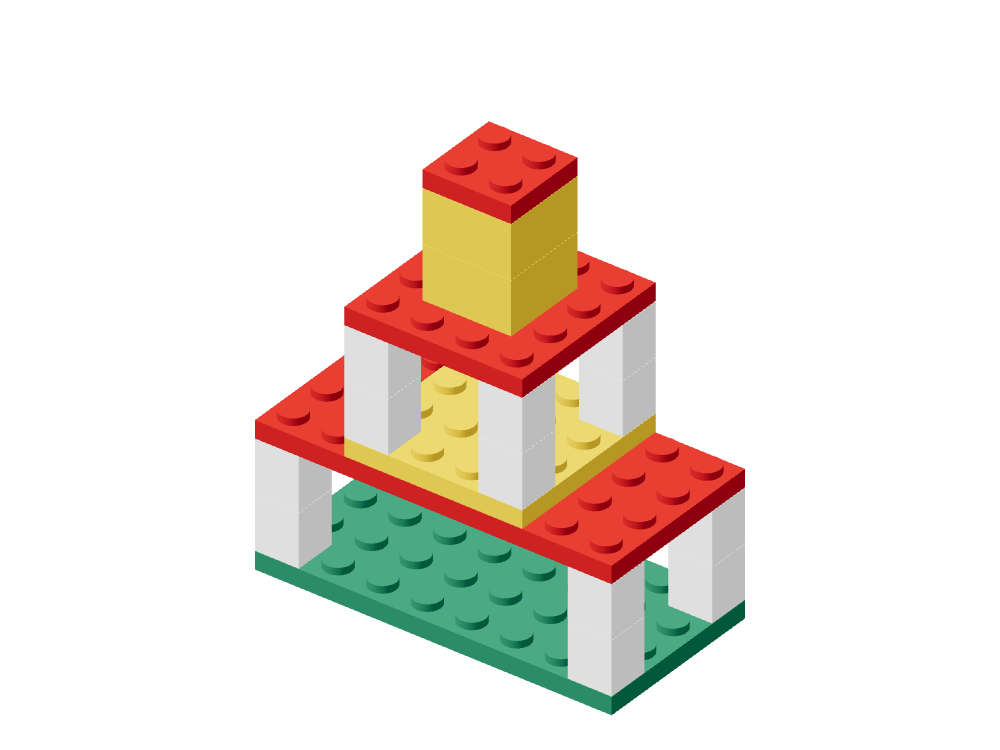
Two-Tier Pagodalandmark · 23 parts · 4 colors
A symmetric two-tier pavilion with white columns, red roofs and a yellow central spire.
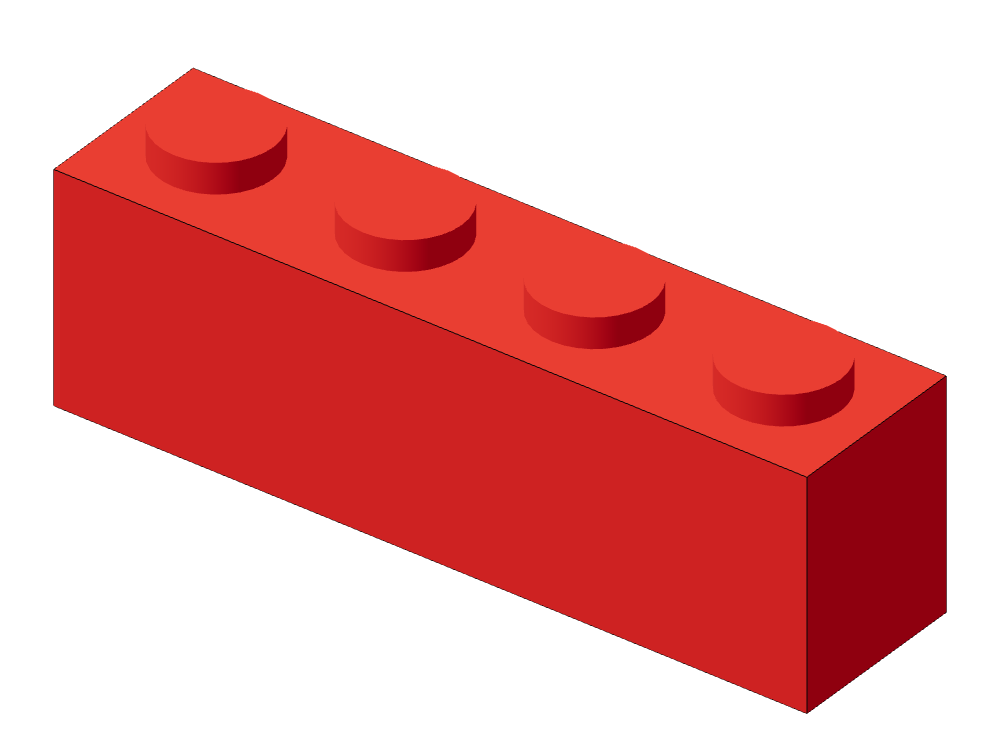
Part recognitionGarden Bench · easy
Isolated part → Type + color + studs
Structural relationWatchtower · medium
Two queried parts → Typed relation tuple
 Multi-view reconstruction
Multi-view reconstructionGarden Gate · easy
Four assembled views + BOM → Full typed pose multiset
 Constrained generation
Constrained generationPark Pavilion · medium
Six structural constraints → One satisfying witness
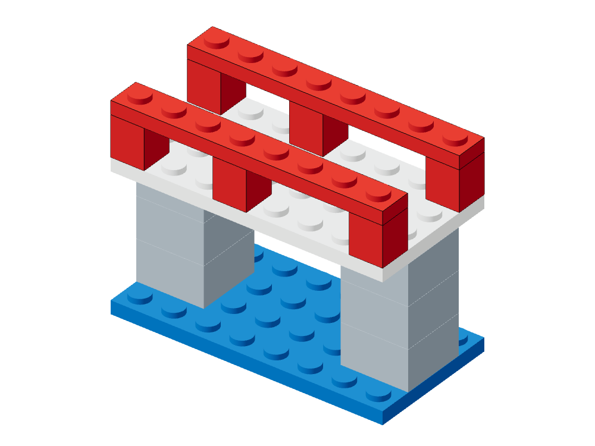
Structure completionCanal Bridge · medium
Bridge missing guard rails + reference + BOM → Guard rails restored
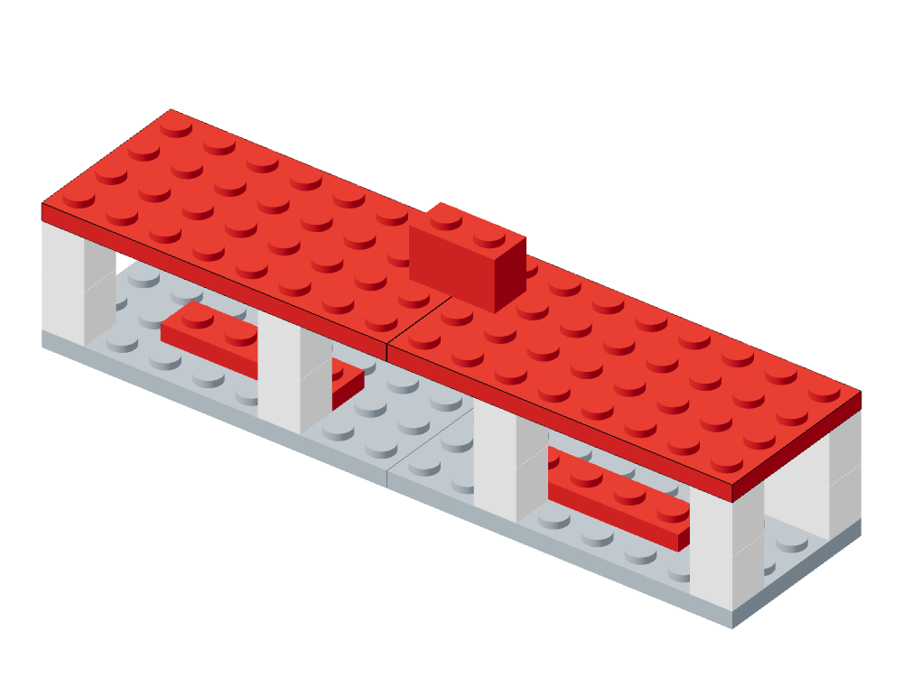
Instruction editingRailway Station · hard
Station + recolor command → Red canopy, geometry preserved
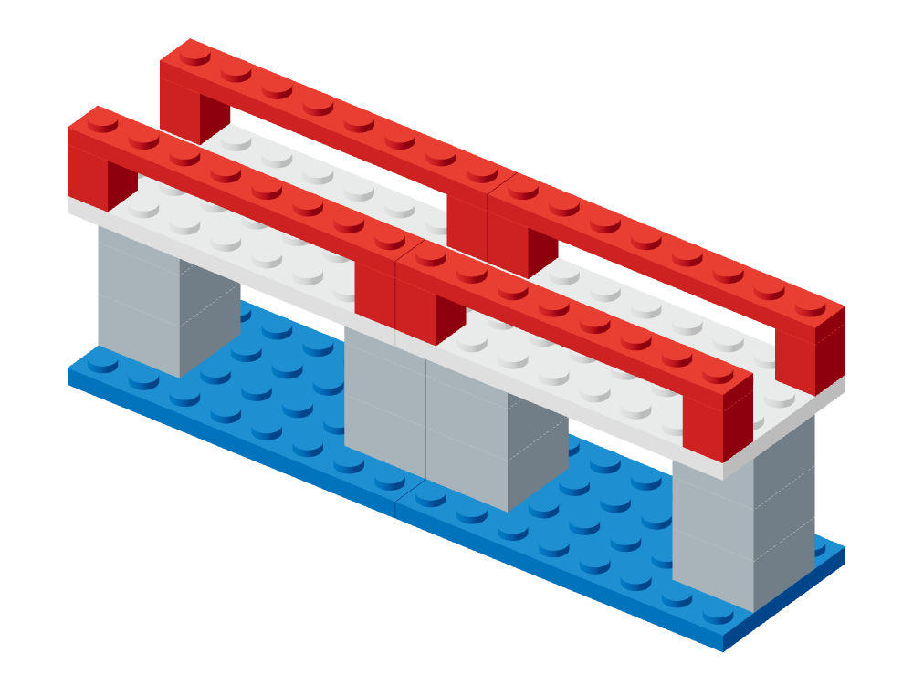
Executable planningDouble-Span Bridge · hard
Target geometry → Verified legal sequence
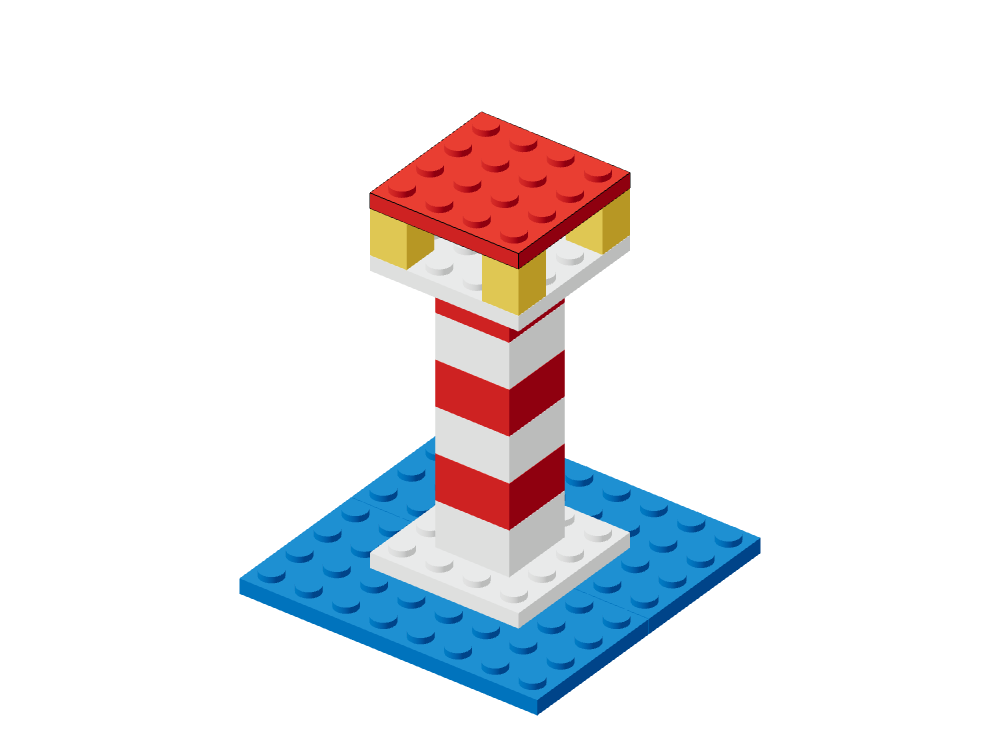
Fault repairLighthouse · hard
Faulty lighthouse + reference → Roof restored + fault localized